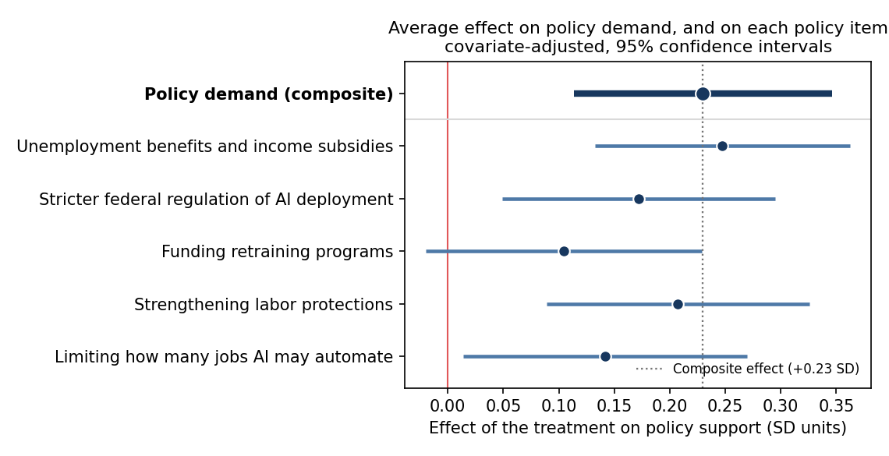
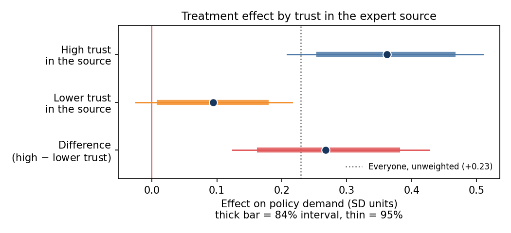

| Trust in source | Outside | Extra in corner | In corner |
|---|---|---|---|
| Higher | 0.288 | 0.397 [0.083, 0.690] | 0.685 [0.364, 0.980] |
| Lower | 0.092 | 0.194 [−0.056, 0.466] | 0.285 [0.041, 0.552] |
The corner effect runs 2.4× the effect outside it among people who trust the source. Among those who trust it less, the corner adds nothing detectable. The conjunction pays off only for people who took the signal on board.
Policy demand η, standardized. Every specification excludes zero; adjustment moves the point estimate by less than 0.07.
| Controls | Estimate | SE | 95% CI |
|---|---|---|---|
| No controls | 0.284 | 0.067 | [0.153, 0.414] |
| + Ideology | 0.233 | 0.060 | [0.117, 0.350] |
| + Trait anxiety | 0.258 | 0.065 | [0.130, 0.387] |
| + Anxiety + Ideology | 0.223 | 0.059 | [0.107, 0.339] |
| + Anxiety + Ideology + Age | 0.230 | 0.059 | [0.114, 0.346] |
OLS with HC1 standard errors, N = 901.
Weighting by pi re-tilts the arms along covariates. Chance imbalance can therefore survive inside the weighted sample even under randomization. Weighted least squares partials ideology, trait anxiety and age out of both η and treatment, and the CATE is re-estimated from the residuals.
| Estimand | Hájek | Adjusted | Shift | 95% CI | P(>0) |
|---|---|---|---|---|---|
| Higher trust | 0.402 | 0.329 | −0.072 | [0.186, 0.543] | 1.000 |
| Lower trust | 0.137 | 0.110 | −0.027 | [−0.030, 0.226] | 0.936 |
| Difference | 0.265 | 0.219 | −0.046 | [0.057, 0.466] | 0.995 |
Same ordering, modestly attenuated.
A respondent sits in the corner if trait anxiety and automation risk each fall in the pooled sample's top tercile, both measured pre-treatment: trait anxiety z ≥ 0.53 and automation risk ≥ 54.5th percentile. Membership follows deterministically from the data. Only the treatment effect is estimated, inside and outside the corner, by weighted least squares.
| Stratum | τbase | δ | Corner (τbase+δ) | Share |
|---|---|---|---|---|
| Higher trust | 0.288 [0.128, 0.442] | 0.397 [0.083, 0.690] | 0.685 [0.364, 0.980] | 12.0% |
| Lower trust | 0.092 [−0.033, 0.217] | 0.194 [−0.056, 0.466] | 0.285 [0.041, 0.552] | 11.5% |
105 of 901 respondents (11.7%) qualify. The two moderators are near-independent, corr(A, R) = 0.014, and the corner share matches the ≈ 11.1% implied by independent terciles.
The same model was fit at three pre-specified cutoffs: the median (50th percentile), the 58.3rd percentile, and the tercile (66.7th, primary). Where trust is higher, δ's 95% CI excludes zero at every cutoff. It shrinks toward the stratum-average effect as the corner widens, but never crosses zero. Lower-trust δ stays null throughout.
Driving these estimates to zero requires a hidden differential treatment response of −1.17 SD for the higher-trust effect and −0.52 SD for the difference between the two. Both are large, and both run opposite in sign to the mechanism under study.
All intervals are bootstrap percentile intervals, B = 2000, with every estimation step refit inside each replicate.